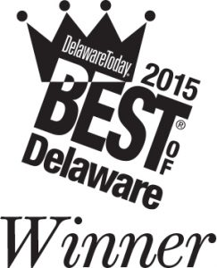
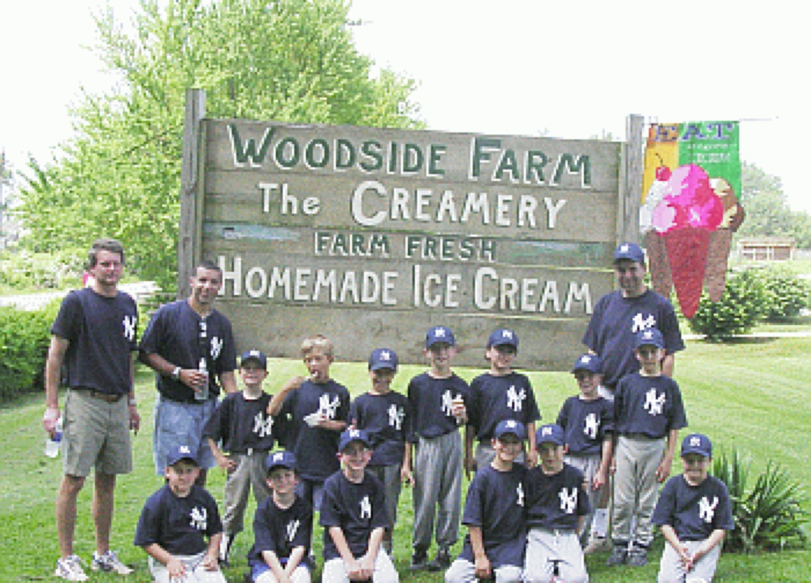

About
Welcome to Woodside Farm!
The Mitchell family established the farm in 1796 where it was primarily a dairy farm for 165 years.
The dairy herd was sold in 1961 and from that point the farm produced various crops, eggs, poultry, sheep, beef, flowers and pumpkins. We started milking cows again in 1995 and in 1998 we opened the Creamery.
We make fresh ice cream right here on the farm using the milk from our 30+ Jersey cows. In 1996, the Mitchell family celebrated their 200th year of family owned farming in New Castle County and was recognized by the state of Delaware as one of the few remaining Centennial farms in the first state.
- In 1796 the farm is established.
- In 1961 the dairy cows are sold off and the farm focused on other products.
- In 1995 started milking again.
- In 1998 we opened the Creamery that we all know and love today.
We are proud to announce that we have been awarded the Best of Delaware 2015 Award by DelawareToday. Thank you for all your great reviews and support!

Other Activities
In addition to all the activities associated with the production of ice creams at Woodside Farm, numerous other activities occur throughout the year. While not open to the public for general tours or visiting, the Mitchell Family actively supports various organizations and their educational efforts. Working the fields and ensuring the health of the farm’s herds of cows, sheep, and goats is hard work lasting from dusk till dawn seven days a week, every week of the year. As America’s quantity of family-owned farms decreases each year, Woodside Farm remains an active reminder of our nation’s agricultural heritage. Below is a sampling of some behind the scenes activities at Woodside Farm.
Community organizations we support and Activities we Sponsor
- Little League Ball Team
- Future Farmers of America
- Delaware Astronomical Society (DAS)

Approximately 30 Jersey cows make up the herd at Woodside Farm. Early in the calendar year each cow gives birth to begin the year’s milking season. Pictured at the left is the Delmarva 4H and Future Farmers of America (FFA) club conducting dairy cow judging at the farm. Through the judging process members learn much about the characteristics and nature of not only Jersey cows but other breeds as well. Their experiences expose them to judging other livestock and learning about the proper care and breeding of farm animals.